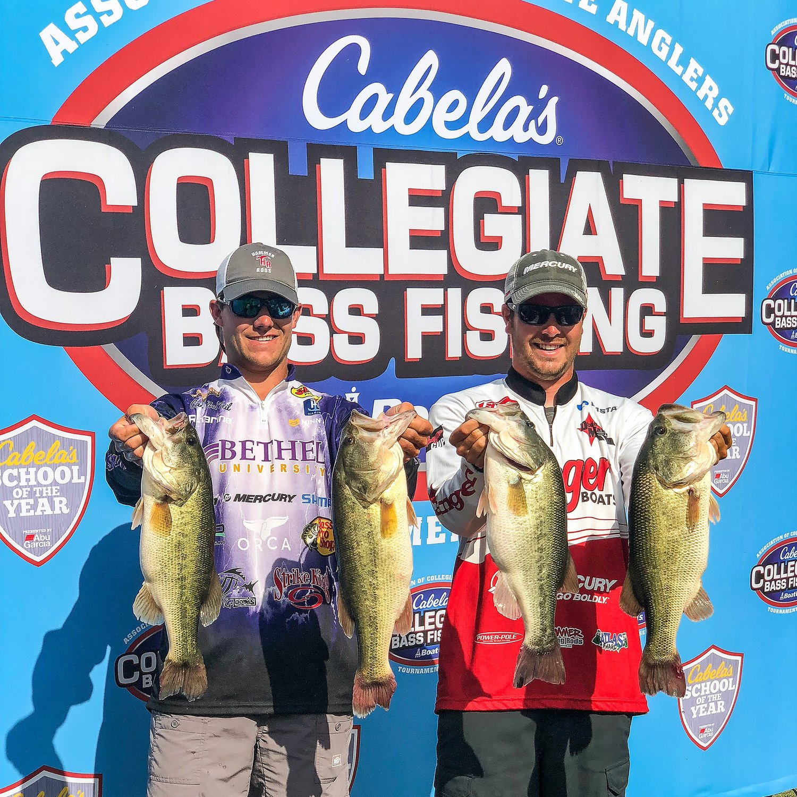

Bass Fishing

Deep sea fishing is an adventure like no other, where the vast expanse of the open ocean becomes your playground and the thrill of the unknown awaits beneath the waves. This exhilarating pursuit involves venturing far from the coastline into the deep waters, where a diverse and awe-inspiring array of marine life, from colossal billfish like marlin and sailfish to the majestic tuna and mahi-mahi, roam. The equipment is robust, the boats are sturdy, and the anticipation is palpable as anglers cast their lines into the abyss, hoping for a breathtaking encounter with a trophy-sized catch. It's a test of both physical endurance and mental fortitude, as battles with these powerful fish can be arduous and unpredictable. Deep sea fishing is not just about the thrill of the chase; it's about the camaraderie among fellow anglers, the breathtaking ocean vistas, and the profound sense of connection with the vast, untamed world beneath the surface. Whether you're a seasoned angler or a newcomer, deep sea fishing promises an unforgettable and adrenaline-pumping experience on the high seas.

Professional bass fishing is a thrilling and highly competitive sport that has gained immense popularity over the years. These elite anglers, often seen competing in prestigious tournaments like the Bassmaster Classic and FLW Championship, showcase their exceptional skills in pursuit of the largest and most elusive bass. These tournaments serve as a platform for top-notch anglers to demonstrate their knowledge of various techniques, from finesse fishing to power fishing, and their ability to adapt to changing conditions on the water. The world of professional bass fishing isn't just about catching fish; it's a testament to dedication, strategy, and a deep understanding of the aquatic ecosystem. With significant prizes at stake and a dedicated fan base, professional bass fishing has evolved into a dynamic and exciting sport that continues to captivate anglers and enthusiasts worldwide.